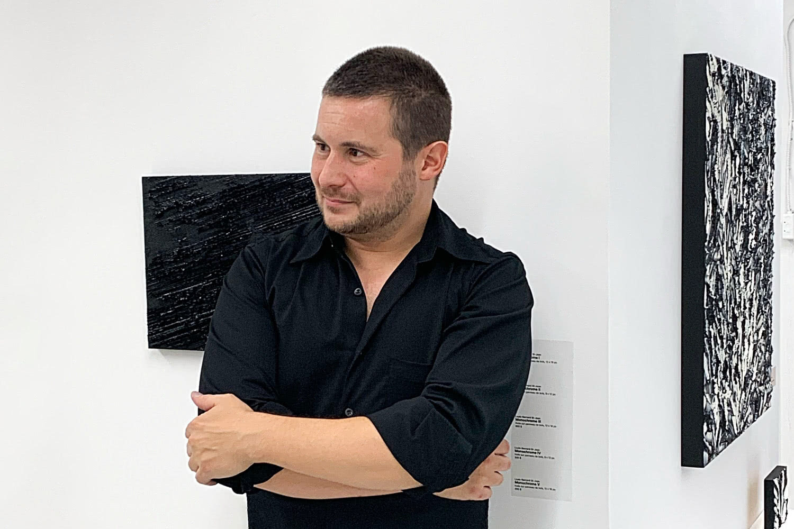
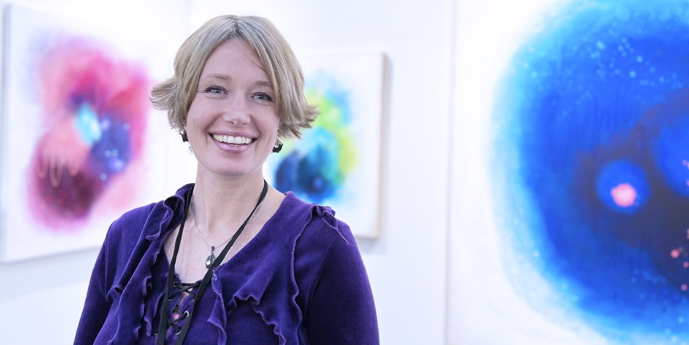
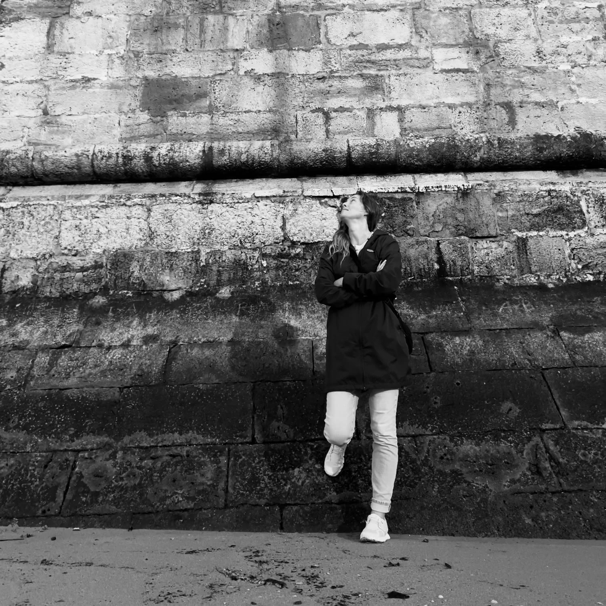
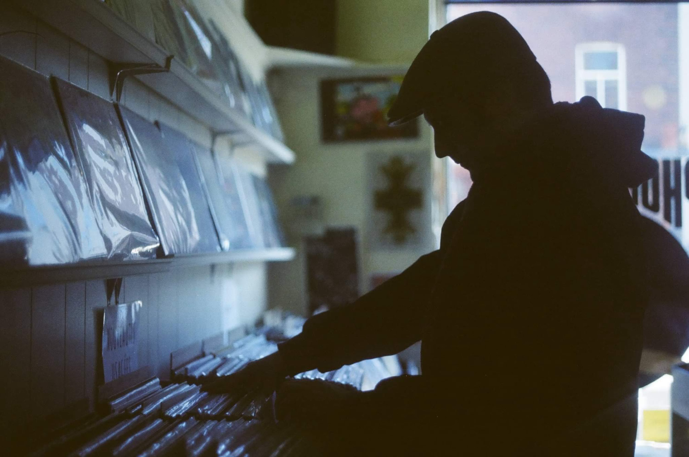

Artists

Louis‑Bernard St‑Jean
|
lbstjean.com · info@lbstjean.com
Owner and director of the gallery, Louis-Bernard St-Jean constantly seeks to push the physical limits of the medium and its support. St-Jean has gradually developed a unique sculptural style of its own, and which fits relevantly into the continuation of Quebec's post-modern heritage such as a natural and contemporary evolution of lyrical abstraction.
His works stand out in particular for their pronounced vertical texture, and present an aesthetic that is both complex and sophisticated, alternating between monochrome paintings and organic abstract landscapes.
Exhibitions
2024 - Abstraction non-conventionnelle
2024 - En noir et blanc... et couleur
2024 - Flight 521 ➔ Destination Belgo
Browse the works
Collaborations

Denise Buisman Pilger
|
artistabroad.com · info@denisebuismanpilger.com
Denise Buisman Pilger, known as the Artist Abroad, is a contemporary artist, expat and avid globetrotter.
Born in Amsterdam, she’s also called Fort Worth, Montreal and Nagoya home, using each relocation as an opportunity to explore and gather inspiration.
Her urban, mixed-media paintings spark a nostalgic connection between places and the people we became because of them. Driven by a need to discover her authentic self, she’s recently broadened her creative horizons to encompass abstract art. Be it figurative or abstract, Denise has a strong sense of composition and consistently works with subtle textures and vibrant colors. Her themes revolving around nostalgia and genuine human identity.
Denise’s creative practice spans nearly two decades, commencing with several years in the role of a professional graphic designer and art director for print media, with experiences both in Europe and North America. Her fascination with texture is at the core of her creative process, involving an array of mixed-media techniques, such as photo manipulation, image transfers, and acrylics.
Denise holds a Bachelor of Arts in Illustration from Willem de Kooning Academy of Arts in Rotterdam. Her work has found a global stage through exhibitions including Art Basel, Art Expo New York, the Toyota Museum and the Carrousel du Louvre in Paris and galleries in New York, Montréal, Ottawa, Toronto, Nagoya, Okazaki and Gifu.
Exhibitions
2024 - Soul & Cityscapes
2024 - En noir et blanc... et couleur

Annie Lapointe
|
annielapointe.com · info@annielapointe.com
Born in 1980, Annie Lapointe is an emerging self-taught photographer from Arvida in Saguenay, living in Montreal since 2004. She studied and works in the field of engineering.
Annie has developed a passion for photography and seeks to capture the present moment through a shot, a presentation bringing out a particular, even unusual, angle to an environment, a setting.
Depending on where her travels take her, Annie Lapointe rediscovers common places by giving them a personal touch.
Artist Statement
Annie Lapointe seeks to capture familiar places in a different way, allowing her to emphasize or focus on an element of a setting or a certain environment from an angle that she considers interesting.
The detail of a decor, of a room, the spontaneous capture of a scene from life, Annie seeks the aesthetics of an object or a moment captured from everyday life.
It is especially during her travels that she lets herself be carried away by the atmosphere of the moment to immortalize points of interest of a place where she is spending a pleasant time.
Exhibitions
2024 - En noir et blanc... et couleur
2024 - Flight 521 ➔ Destination Belgo
Browse the works

Morti Viventear
|
mortiviventear.com | info@mortiviventear.com
An avid music collector and archivist of hip-hop culture, Morti Viventear is a Montreal beatmaker endorsed by the German label Anette Records since 2014.
In 2019, his first original soundtrack was praised by the Rendez-Vous du Cinéma québécois as part of a film concert. He released his fourth album last year, titled Wrecked Cognition.
Events
2024 - Nuit blanche à Montréal
Espace St-Jean / Art contemporain © 2023-2024 Louis-Bernard St-Jean